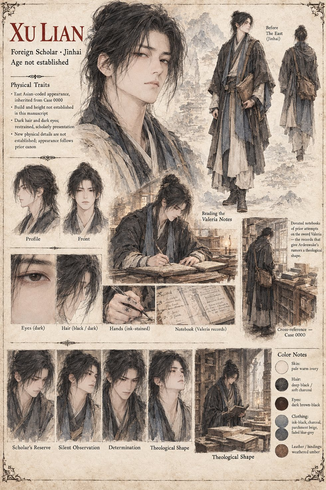

Xu Lian
Foreign scholar · Jinhai · also in Case 0000B · age not established
A careful foreign scholar who spends two years cataloguing every recorded attempt on Valeria before returning, empty-handed and unbitter, to a country half a world away. The eleven notebooks he leaves behind are donated to the Vigil and are what give the news from Sarkveti its theological shape at Ardenwake: among his annotations sits an anchorite walled into a cell against the cathedral's north face, who crossed a hall full of soldiers who had just failed to move the sword and lifted it without once thinking about succeeding, failing or the blade. He is also the foreign scholar of Case 0000B, where he appears beside the Anchorite herself. The sheet draws him East Asian-coded and restrained, with dark hair, dark eyes, ink-stained hands and a satchel of weathered bindings, and files him under Jinhai; it says his appearance follows earlier canon and adds nothing new.